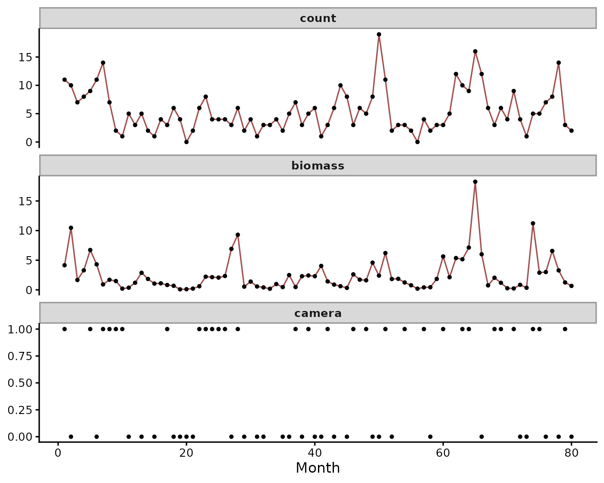
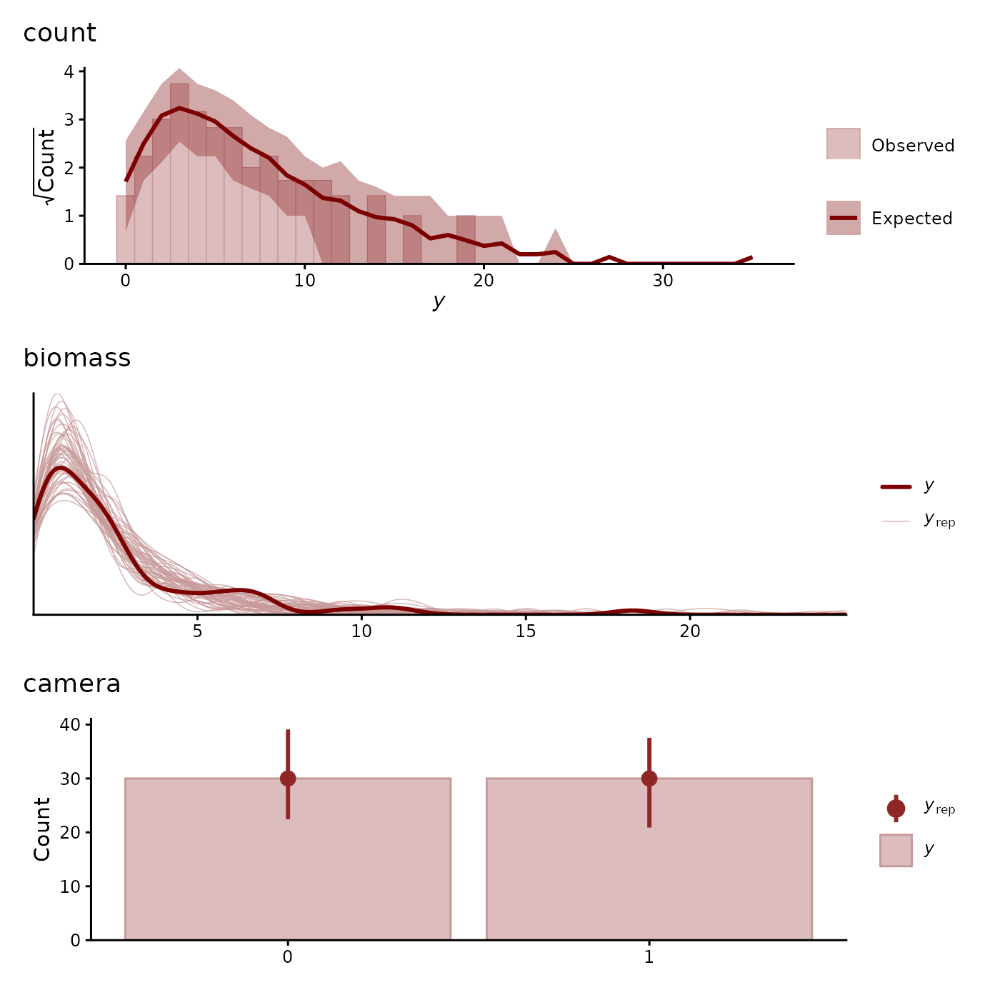
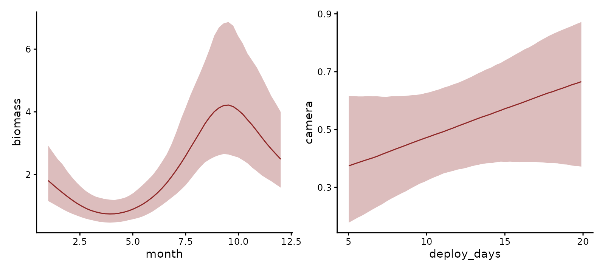
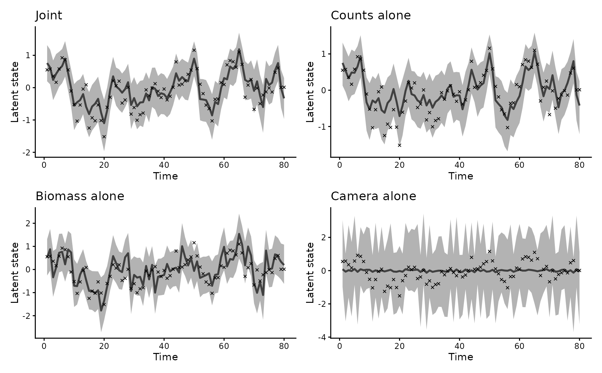
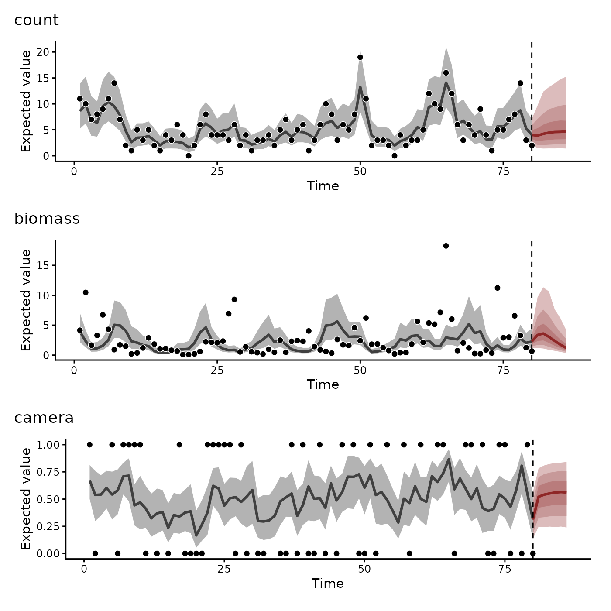

One latent process, several observation models
Nicholas J Clark
2026-10-28
Source:vignettes/articles/mvbf.Rmd
mvbf.RmdMonitoring programmes often measure one quantity with several methods. A population might be counted along transects, weighed in traps and detected by cameras in the same months. Each method measures the same abundance through an observation process of its own. Fitted separately, each method estimates abundance from its own data alone. Fitted jointly, every method informs one estimate of the shared abundance. Integrated population models combine data sources in this way (Schaub and Abadi 2011).
mvgam fits such a model as a multivariate formula: one
bf() per response, each with its own family and covariates.
A single trend_formula describes the latent process they
share. This article simulates three methods observing one population. We
fit the joint model and the three separate models, then compare how
closely each recovers the simulated abundance.
The data
The latent abundance , on the log scale, follows a stationary AR(1) over 80 months:
Three methods observe it. Transect counts (count) are
Poisson with a log link. Survey effort varies by month and enters as an
offset. Trap biomass (biomass) is Gamma with a log link and
shape 2. A seasonal cycle in month adds to the latent state. Camera
detections (camera) are Bernoulli with a logit link.
Detection rises by 0.05 on the logit scale with each day the camera is
deployed. The cameras run in only 60 of the 80 months.
set.seed(2024)
n_time <- 80
z <- numeric(n_time)
z[1] <- rnorm(1, 0, 0.4 / sqrt(1 - 0.7^2))
for (t in 2:n_time) {
z[t] <- 0.7 * z[t - 1] + rnorm(1, 0, 0.4)
}
month <- (seq_len(n_time) - 1) %% 12 + 1
log_effort <- log(runif(n_time, 0.8, 1.2))
deploy_days <- runif(n_time, 5, 20)
mu_biomass <- exp(0.5 + sin(2 * pi * month / 12) + z)
mv_data <- data.frame(
time = seq_len(n_time),
series = factor("pop1"),
month = month,
log_effort = log_effort,
deploy_days = deploy_days,
count = rpois(n_time, exp(1.5 + log_effort + z)),
biomass = rgamma(n_time, shape = 2, rate = 2 / mu_biomass),
camera = rbinom(n_time, 1, plogis(-0.5 + 0.05 * deploy_days + z))
)
mv_data$camera[-sort(sample.int(n_time, 60))] <- NA
observed <- do.call(rbind, lapply(c("count", "biomass", "camera"), function(r) {
data.frame(time = mv_data$time, value = mv_data[[r]], response = r)
}))
observed$response <- factor(observed$response,
levels = c("count", "biomass", "camera"))
ggplot(observed, aes(time, value)) +
geom_line(data = ~ subset(.x, response != "camera"), colour = "#A25050") +
geom_point(size = 1, na.rm = TRUE) +
facet_wrap(~ response, ncol = 1, scales = "free_y") +
labs(x = "Month", y = NULL)
The three simulated monitoring records. The camera record has gaps in the months the cameras did not run.
The joint model
Each response enters through its own bf(), combined with
+, carrying its family and its covariates.
set_rescor(FALSE) declares that the responses share no
residual correlation beyond the latent state. A cyclic smooth of month
captures the seasonal cycle in biomass:
joint_formula <-
bf(count ~ 1 + offset(log_effort), family = poisson()) +
bf(biomass ~ 1 + s(month, bs = "cc", k = 8), family = Gamma(link = "log")) +
bf(camera ~ 1 + deploy_days, family = bernoulli()) +
set_rescor(FALSE)
mod_joint <- mvgam(
joint_formula,
trend_formula = ~ AR(p = 1),
data = mv_data,
knots = list(month = c(0.5, 12.5)),
chains = 4, seed = 2024, silent = 2
)The latent state enters the linear predictor of every response. Because a response with no record drops out of the likelihood, a month without a camera record informs the state through the count and biomass likelihoods alone.
Checking each response
pp_check() compares draws from the posterior predictive
distribution with the data. Without resp it draws one panel
per response:
pp_check(mod_joint, ndraws = 50)
Posterior predictive checks for each response. A rootogram compares the frequency of each count. A density overlay checks the biomass record. Bars give the share of each camera outcome.
conditional_effects() draws each response’s covariate
effects on that response’s scale, with the latent process held out. The
simulated biomass cycle peaks in month 3:
ce <- conditional_effects(mod_joint)
wrap_plots(plot(ce, plot = FALSE), ncol = 2)
Expected biomass by month and camera detection probability by deployment days, with 95% credible intervals.
The fitted biomass curve peaks in month 10. The deployment slope is 0.08 [-0.04, 0.21] on the logit scale, against the 0.05 used to simulate the data.
What the joint model gains
To compare, we fit each method on its own, with the same AR(1) state:
fit_one <- function(formula, family) {
mvgam(formula, trend_formula = ~ AR(p = 1), family = family,
data = mv_data, knots = list(month = c(0.5, 12.5)),
chains = 4, seed = 2024, silent = 2)
}
mod_count <- fit_one(count ~ 1 + offset(log_effort), poisson())
mod_biomass <- fit_one(biomass ~ 1 + s(month, bs = "cc", k = 8),
Gamma(link = "log"))
mod_camera <- fit_one(camera ~ 1 + deploy_days, bernoulli())hindcast(type = "trend") returns each model’s posterior
for the latent state:
fits <- list(
"Joint" = mod_joint,
"Counts alone" = mod_count,
"Biomass alone" = mod_biomass,
"Camera alone" = mod_camera
)
truth <- data.frame(time = seq_len(n_time), z = z)
wrap_plots(lapply(names(fits), function(nm) {
plot(hindcast(fits[[nm]], type = "trend")) +
geom_point(aes(time, z), data = truth, shape = 4, size = 1) +
labs(title = nm, y = "Latent state")
}), ncol = 2)
Posterior medians and 95% credible intervals of the latent state from the joint model and from each method alone. Crosses mark the simulated state.
recovery <- t(vapply(fits, function(fit) {
s <- summary(hindcast(fit, type = "trend"))
c(RMSE = sqrt(mean((s$predQ50 - z)^2)),
`Interval width` = mean(s$predQ97.5 - s$predQ2.5))
}, numeric(2)))
round(recovery, 2)
#> RMSE Interval width
#> Joint 0.26 1.24
#> Counts alone 0.32 1.36
#> Biomass alone 0.47 1.74
#> Camera alone 0.57 3.99Ordered by root mean squared error against the simulated state, the fits rank joint (0.26), counts alone (0.32), biomass alone (0.47), and camera alone (0.57). Intervals are narrowest in the joint fit and widest in the camera alone fit. A single binary record per month constrains abundance weakly.
Forecasts
forecast() extends the latent state past the last month
and passes it through each response’s observation model. The new data
hold unit survey effort, the calendar month of each future time point
and 15 deployment days for the camera. type = "expected"
returns the expected count, the expected biomass and the detection
probability:
newdata <- data.frame(
time = n_time + 1:6,
series = factor("pop1"),
month = (n_time + 0:5) %% 12 + 1,
log_effort = 0,
deploy_days = 15,
count = NA, biomass = NA, camera = NA
)
fc <- forecast(mod_joint, newdata = newdata, type = "expected")
plot(fc)
Expected values for each response over the training months and a six-month forecast. Points are the observations.
The forecast object also feeds score() once the held-out
observations arrive.
Against the simulated abundance, the four fits ranked joint (0.26), counts alone (0.32), biomass alone (0.47), and camera alone (0.57) by error. A single binary outcome per month constrains the state weakly. Fitted jointly, the camera record takes the state the other methods estimate. A monitoring programme that measures one population by several methods can fit them to one latent process and let each method inform the rest.
Where to next
Each function used here has a help page, such as
?pp_check or ?forecast.mvgam, with its
arguments and output. how_to_cite() writes a methods
paragraph for a fitted model. methods_md() writes out its
equations.
Related articles:
- Integrated distribution models combine survey protocols that share one log-intensity.
- Joint species distribution models share latent factors among many species.
- State-space VARs give each series its own latent state, with lagged effects between them.
- Forecast evaluation covers scoring rules and leave-future-out cross-validation.
- mvgam overview introduces the observation and trend formulas.
References
Schaub M and Abadi F (2011). Integrated population models: a novel analysis framework for deeper insights into population dynamics. Journal of Ornithology 152(Suppl 1), S227-S237. doi:10.1007/s10336-010-0632-7